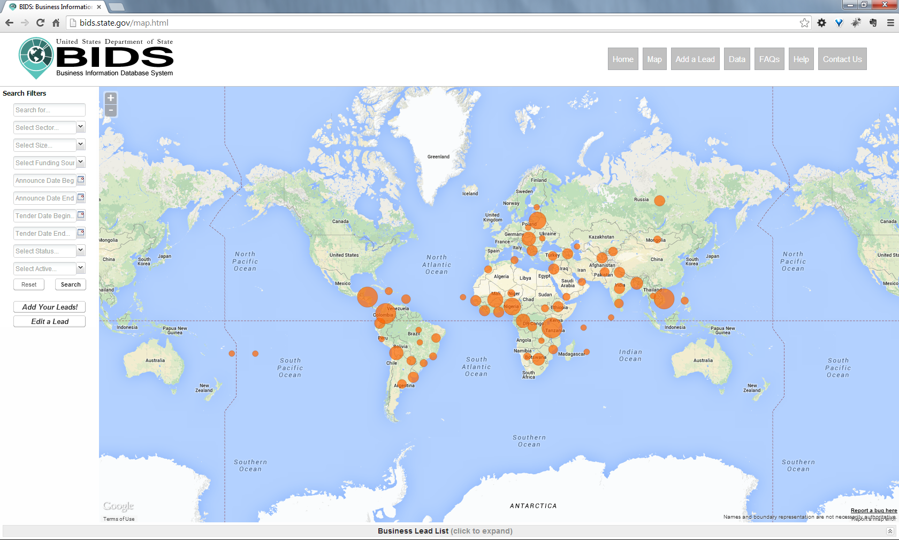

BIDS: A Users Manual
The Business Information Database System
INTRODUCTION
Many U.S. businesses -- and in particular, small and medium sized enterprises -- report that a major obstacle to exporting is a lack of actionable market intelligence. In line with the President's National Export Initiative and with Executive Order 13630 of December 6, 2012, the State Department's Economic Bureau and IRM's Office of eDiplomacy have developed BIDS -- the Business Information Database System -- as an open, internet-based platform to aggregate information on tender opportunities and trade leads, and make that information available to U.S. business.
BIDS is populated by data entered at posts and collected from the Multilateral Development Banks (MDBs). At present, the focus of BIDS is on major, strategic projects funded by MDBs or governments. It's not intended to be a comprehensive catalog of the universe of projects; the focus is on projects where U.S. firms can be competitive.
BIDS is an open platform, meaning anyone will be able to access its data. This was a conscious decision made for a number of reasons, not least of which was to lighten the burden of data entry on Embassies. Any information posted on BIDS is visible to anyone, including our foreign competitors. The intent is that U.S. companies will follow up with posts directly for more details on projects that are of interest, providing the opportunity to connect firms to resources and information that may give them the edge in securing the deal.
BIDS is not a standalone project. It is part of the broader Department of State and U.S. government effort to promote U.S. exports. BIDS data is available through a State Department website, and U will also be available through the Department of Commerce (and its network of U.S. Export Assistance Centers across the U.S.), and used by the U.S. Small Business Administration (and its network of Small Business Development Centers across the U.S.), and other agencies such as the U.S. Trade and Development Agency and the Overseas Private Investment Corporation. Data from BIDS will also be directly available to organizations such as the American Water Works Association which will be able to package it and push it out to their members.
BIDS has been developed with a great deal of input from posts, from other agencies, and from the private sector. It is and will remain a work in progress. Contributions to BIDS -- from adding new leads, to commenting and updating existing leads, to giving constructive feedback on the system -- will are instrumental in supporting U.S. business.
HOW DOES BIDS WORK?
Where do I find BIDS?
The BIDS Website is at http://bids.state.gov. The website works both in Internet Explorer (versions 8 and above) and in Google Chrome. BIDS will also be available through the "Econ@State" Portal, at http://econ.state.gov, on the State Department's Intranet.
What does BIDS look like?

This is the BIDS Webpage. It consists of four main elements:
The Map
The map is interactive; you can click or use the scroll wheel on your mouse to zoom in and out, and click and drag to move the map. You can also zoom in or out using the (+/-) buttons on the top left corner of the map.
Dots on the map indicate projects. Hovering over a dot will cause a box will appear either referring to a specific project, or indicating the number of projects connected to that location. Clicking on the individual project brings up the details of the project; if more than one project is represented in a dot, clicking on the dot will open a list of the projects, where you can click on an individual project for more information.
The Search/Filter Table
The Search/Filter Table allows users to select parameters to find specific projects. (The specific data fields are described in detail in the "Adding A Trade Lead" section below.) Most of the search/filter functions are selected by drop-down tables; click on the parameter and select the appropriate criteria. Then click the "Search" button below the tables and the map will show only the projects matching the selected criteria. You may select as many criteria as you wish.
You can also search by keywords. The keyword search will search across all alphanumeric data fields (project description, etc.), not just those in the "keywords" field.
Clicking the "Reset" button clears the criteria you have selected and resets the map to the original view.
The Menu Bar
Home resets the map, clears any criteria in the search filters and returns you to the BIDS Landing page.
Map will bring you back to the Map from any other page on the site you may be visiting.
Add A Lead appears in both the menu bar and at the bottom of the Search/Filter panel. Currently this function is only available when accessing BIDS from a computer connected to the Department of State internal network. Add A Lead opens a new window where you may add a new trade lead (see "Adding A Trade Lead" below).
Data will take you to a page where you may preview and download the full BIDS dataset as a 'Comma Separated Values' (.CSV) file to use in Microsoft Excel or another program. In the Data view, you may sort data by each data field (Country, Status, Sector).
FAQs opens a list of Frequently Asked Questions, and also allows you to submit a question about BIDS. A list of government and non-government resources that relate to infrastructure development and business support can also be found here - these are primarily links to websites such as those of the multilateral development banks or U.S. government agencies.
Help will lead you to this Standard Operating Procedures document.
Contact Us click here and your default mailbox program will create an e-mail to the BIDS developers for your questions or comments.
The Business Leads List
The Business Leads List is a narrow strip across the bottom of the BIDS window. When you click on the Business Leads List, the List will scroll up. It presents in tabular format the same data that you are looking at on the map. Use the scroll bar at the bottom and the right of the list to see all the data fields.
The list represents filtered data; that is, if you have selected any criteria in the Search/Filter Table, the same criteria are used to populate the Map and the Business Leads List. Resetting the Search/Filter Table will reset the Business Leads List as it does the Map.
Two buttons appear at the upper left corner of the Business Leads List. The first is the "Edit Entry" button. Click on an entry in the list will highlight that entry; then click on the "Edit Entry" button. A new window opens where you can edit the entry to make corrections or update information (see "Editing A Trade Lead" below). The edit entry button is only available when you are accessing BIDS from a computer connected to the internal State Department network. Only authorized users are permitted to edit entries.
The second button is the "Export to CSV;" this will download a 'Comma-Separated Values' file of the filtered data in the Business Leads List that you may save to your system and open using Microsoft Excel or another software program.
QUESTIONS ABOUT BIDS?
What if I have a problem or a comment about BIDS?
Questions or comments about BIDS can be sent to our support team; to report specific technical problems with BIDS, click on "Report a Bug" at the bottom of the BIDS map. Also check the FAQs on the website.
Who reviews entries into BIDS?
Posts should develop their own internal clearance and approval systems for adding information to BIDS. We expect that Economic related offices (FCS, USAID, etc.) at posts will review proposed entries; at some posts the Economic Counselor or the Deputy Chief of Mission may want to approve submissions. In Washington, EB/CBA and EB/IFD/ODF will be reviewing submissions largely for consistency and format. To ensure information is delivered in a timely manner, it's important the review cycle be quick. EB expects to be able to clear most entries within one business day.
How do I know what I should enter?
BIDS is not an encyclopedia of all possible foreign government tenders. Projects submitted for BIDS should be selected strategically, based on answers to a few simple questions such as:
HOW TO USE BIDS
Officers overseas will find two primary uses for BIDS.
The first is to enter trade leads in country as a way to alert U.S. business to potential new export opportunities.
The second involves using BIDS to search for MDB or other projects in country that have been entered automatically into BIDS. Officers can add value to those entries by contacting key ministries or U.S. companies to develop more information and updating the BIDS dataset
Adding a Trade Lead
Only authorized users who access BIDS from a computer connected to the State Department OpenNet system are able to enter trade leads. In some cases the system may be slow to recognize your connection. If you erroneously get a message saying you are not connected to OpenNet, please give the system a few seconds to recognize you and then try again.
Clicking on either the "Add A Lead" button on the top right of the page or at the bottom of the left panel first opens a pop-up window; clicking "OK" confirms the user understands that only unclassified information may be added to the system and that the user has obtained any necessary clearances or approvals at post to enter the data. Then a second pop-up window opens where you can enter information about business opportunities. The data fields are described below. Underlined fields are required, others are optional.
Project Title
Please use the official title of the project. Where there is no official title, please use a brief description, e.g.: Ring Road Project.
Specific Location
Please indicate the city or a specific landmark such as a university, natural feature, or province. If the project is nationwide or is not easily connected with a single location, like an electrification project in several different provinces, please indicate the geographic area. Check to make sure that your project will map properly by going to Google™ and attempting to map it there.
Country
Please indicate the country where the project will be located.
Primary Sector
Check one box indicating the appropriate sector for the project. The sectors included here are based on the two digit North American Industry Classification System (NAICS) codes maintained by the U.S. Census Bureau. More information on NAICS is provided in the Appendix; complete descriptions of the sectors and subsectors can be found on the Census Bureau website. In some cases, a project may bridge two or more sectors; please pick the predominant sector. Please use the "Keywords" field to add additional information that may help users find your project.
Project Value
Please enter the U.S. dollar value (or estimate) of the project. Enter whole dollar values (i.e. $1,200,000); do not use abbreviations (such as $1.2m).
Status
There are three options: Pipeline, In Procurement, or Fulfilled.
Project Number
Many projects have some type of identifying number. Please indicate the reference number from the government, bank, etc., associated with the project. If there are two separate funding sources and therefore two different project numbers, please indicate them here.
Primary Funding Source
Choose from one of Development Banks (i.e. a multilateral development bank such as the World Bank or the Asian Development Bank); Government (at any level - national, provincial, local); Private (this will be rare); Self Financed (for example, a State-Owned Enterprise funding a new power station from its own resources); or Other. Additional details of the primary funding source, and any other funding sources, may be entered in the "Post Comments" box.
Information Source
Select from the drop down list. If you are entering a project at an overseas post, select "Post Identified Project." Projects added to BIDS from MDB sites will be identified with the sponsoring bank. Offices in Washington can also enter projects and would select "Washington Identified Project."
Project Description and Bidding Requirements
Include key details of the project description that will help BIDS users understand the project more fully. Include any special or specific bidding requirements that the government may have as well as bid deadline, if one has been established.
Keywords
Please enter any combination of keywords that describe the project, e.g., Power, Dam, Hydroelectricity, Renewable, Water, and Environment. Also enter terms that may better define the sector.
Project Announced
When was this project publicly announced? Alternatively, the date entered here may be the date post learned about the project prior to a formal announcement.
Expected Tender Date
Indicate when the project sponsor expects to release a tender for the project. This may need to be updated as new information becomes available. If the project sponsor has announced a bid deadline, that date should be included in the "Project Description and Bidding Requirements" section above.
Borrowing Entity
Please indicate the foreign government agency borrowing money for the project. If none, say "none".
Implementing Entity
Indicate what government ministry or other entity will be responsible for issuing the project documents an overseeing the project.
Project Website
If there is a website link to more information about the project, enter the web address here.
Post Business Tab
In 2012, Posts were instructed to create "Business Tabs" on their public websites; providing the website information here will connect businesses directly to post information on business conditions in the country.
Submitting Officer
Please enter the name of the officer submitting the lead, or the name of the person at post who would be the most appropriate point of contact for follow-up questions from Washington or the private sector.
Submitting Officer Contact
Please enter the e-mail address of the person named in the "Submitting Officer" box. This should be an "@state.gov" address.
Implementing Entity POC(s) and Contact Information
Please include principal and secondary contacts, names, address, email addresses and phone numbers.
Post Comments
Include information that will help the bidders understand the dynamics of the bid. Also, if there will be a Direct Line call, please indicate date, time, number to register and requirements. N.B. BIDS is not designed or authorized to house any classified or sensitive information. You should assume any information you enter here will be available to the general public.
The 'Reset' button will clear any information you've entered including any drop-down box selections.
Once you have entered all the required data and checked to be sure it's all correct, click on "Save" at the bottom of the pop up window. The "Save" button will be grayed out if any required information is missing. When you click save, a pop-up box will confirm that your data has been put in queue for final review and posting to the BIDS website (see The BIDS Clearance and Review Process). You will also receive an e-mail with the details of your entry; this confirms the entry is ready for final clearance and posting.
Editing a Trade Lead
THIS SECTION IS UNDER DEVELOPMENT
BIDS entries that are not edited or updated within 90 days of being entered into BIDS will be automatically archived.
Search and Filter Functions
THIS SECTION IS UNDER DEVELOPMENT
THE FUTURE OF BIDS
We see BIDS as only one small part of a much broader interagency toolkit that can support U.S. business. Within the Department, BIDS is part of our larger Economic Statecraft toolkit, and should be integrated with Business Tabs, Direct Line, and other programs. We've been working with the Department of Commerce to ensure it will be able to incorporate BIDS information into its systems as well as with OPIC, USTDA, ExIm, BusinessUSA.gov, and others.
We see a future where a U.S. business leader can come into her office, turn on her computer, and get alerts on new projects that are of particular interest to her firm. Imagine a businessperson logging into a website, calling up a U.S. Government webpage that not only provides details on a major infrastructure opportunity, but also has a link to the relevant Country Commercial Guide, contact information for the appropriate USTDA or Ex-Im Bank representative for the project, and even a notice about a Direct Line call about the project next week.
GLOSSARY
Archived
BIDS entries will be archived if they move to an "in procurement," "fulfilled," "unfulfilled," or "cancelled" status, or if they have not been edited or updated in the previous 90 days.
Cancelled
This indicates that the government or MDB took an active decision to cancel a project.
Fulfilled
Fulfilled indicates that a project has been completed.
In Procurement
A project is "in procurement" once funding has been approved and tender documents for contractors, subcontractors, and suppliers have been issued, and/or the projects is actively being implemented.
Pipeline
A project is said to be in the 'pipeline' from the earliest point of identification through project preparation, appraisal, and final approval. For a MDB project, 'pipeline' generally refers to any point in the process before the bank's Board of Directors grants final approval. This is the period of time when BIDS is most important -- U.S. companies have their best chance at gaining a contract when they are involved in the pipeline.
Unfulfilled
In BIDS, a project will be listed as 'unfulfilled' if we have no information on the status of a project after 90 days.